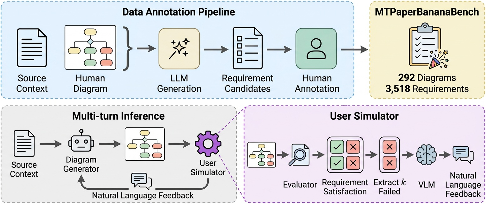

At the core of the benchmark is an interaction process in which user requirements gradually emerge as the diagram evolves. Since collecting human interactions at scale is prohibitively expensive and hard to standardize, we develop a user simulator driven by a pool of requirements hidden from the diagram generator at the initial turn. At each subsequent turn, the simulator identifies unfulfilled requirements, spanning content, layout, and visual representation, and formulates k of them into natural language feedback. The final diagram is evaluated on (1) satisfaction of the user requirements and (2) overall diagram quality.

Annotation and inference pipeline of MTPaperBananaBench. The multi-turn interaction is driven by a user simulator that converts unsatisfied requirements into natural language feedback at each turn.